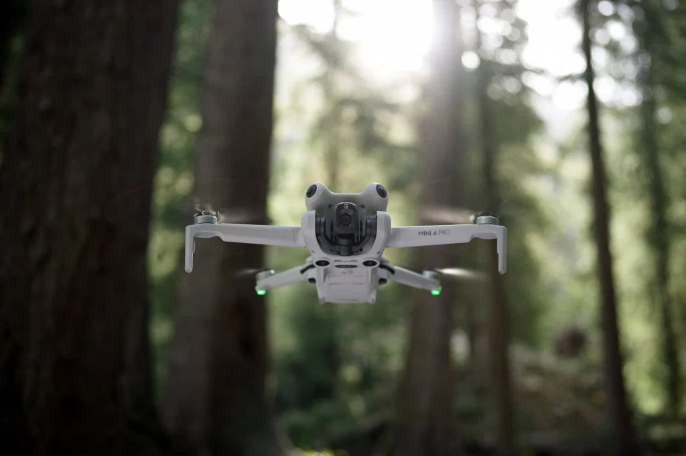
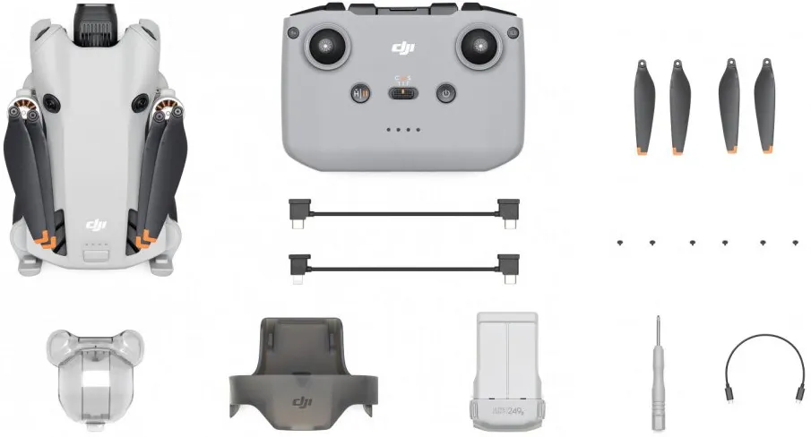

Popis a parametry dronu
Mini 4 Pro stejně jako jeho předchůdci váží méně než 249 g pro pohodlné používání na cestách a mírnější legislativní nároky na piloty a provozovatele v různých regionech
Kamera Mini 4 Pro se chlubí 1/1,3palcovým snímačem CMOS s funkcí Dual Native ISO Fusion, clonou f/1,7 a 2,4μm pixely 4 v 1, takže snadno zachytíte i složitější detaily. Díky HDR videu v 4K/60 fps kvalitě a zpomalenému videu při 4K/100 fps můžete zachytit detailní záběry, zatímco se 10-bit D-Log M postará o ohromující škálu 1,07 bilionu barev a HLG zase o větší flexibilitu při editaci a sdílení. HLG díky vysokému dynamickému rozsahu zaručuje, že barvy a jas zůstanou přirozené a realistické bez nutnosti úprav nebo konverze formátu.

Kvalitní noční záběry z dronu a RAW
Vylepšený algoritmus redukce šumu nočních snímků u modelu Mini 4 Pro vám pomůže pořizovat jasnější a kvalitnější záběry, i za šera nebo v noci. Každý drobný detail navíc můžete zaznamenat díky 48MP RAW a nové generaci SmartPhoto, která kombinuje HDR zobrazování, rozpoznávání scén a mnoho dalších funkcí.
Chytré režimy pořizování záběrů
Mini 4 Pro nabízí 3 způsoby, jak můžete snadno pořídit snímky, které potřebujete: Spotlight, Point of Interest a novou revoluční funkci ActiveTrack 360° s vylepšenými možnostmi sledování objektu. K dispozici jsou vám jako obvykle také automatické chytré režimy.
- MasterShots nabízí dynamické šablony pro pohyby kamerou přizpůsobené pro portrétní snímky, záběry zblízka, nebo z velké vzdálenosti.
- QuickShots nabízí režimy Dronie, Circle, Helix, Rocket, Boomerang a Asteroid.
- Hyperlapse nabízí režimy Free, Waypoint, Circle a Course Lock s neomezenou dobou snímání a podporuje také vytváření kompozice během natáčení.
- Panorama podporuje 180°, Wide, Vertical a Sphere panoramatické snímky.
Dostupná provedení

Dron DJI Mini 4 Pro + RC-N2
V tomto balíčku získáte dron DJI Mini 4 Pro se základním ovladačem DJI RC-NC.

Dron DJI Mini 4 Pro Fly More Combo + RC-2
V tomto balíčku získáte dron DJI Mini 4 Pro s ovladačem s vestavěným dispejem DJI RC 2 a dalším praktickým příslušenstvím.
Dron DJI Mini 4 Pro Fly More Combo + RC-2 + Hodně dobrá výbava pro long range
V tomto balíčku je to stejné.
Mini to the Max
Nakupte nyní ve verzi Fly More Combo s 10% slevou za jedinečnou cenu 28 990 Kč.

{kind=link}
{kind=link}